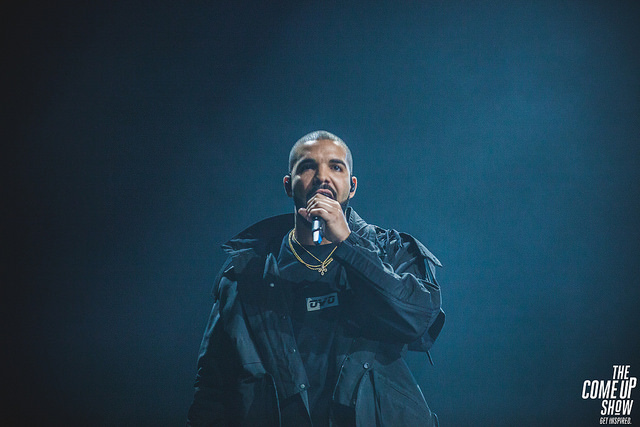

Drake: Billboard’s R&B/Hip-Hop Chart Favorite
A picture of Drake from The Come Up Show By Charito Yap.
Aubrey “Drake” Graham was born on October 24, 1986, in Toronto. Drake’s interest in performing began at an early age when he spend his summer in Memphis, Tennessee, with his dad, Dennis Graham, a drummer who worked with Jerry Lee Lewis. Today, Drake is a Grammy-Award winning, platinum-selling recording artist and multi-faceted entertainer. Click to see more..
Drake was first recognized for his role on the highly-successful television series Degrassi: The Next Generation in the early 2000s. He then and joined rap star Lil Wayne on tour after Lil Wayne heard Drake’s music in the summer of 2008. Since then, Drake had released some of the most popular music albums including So Far Gone (2009), Thank Me Later (2010), Take Care (2011), Nothing was the Same (2013), If You're Reading This It's Too Late (2015), What a Time to be Alive (2015), Views (2016), More Life (2017), and Scorpion (2018). Drake now holds the record for the most number one hits on Billboard’s R&B/Hip-Hop Chart.


Emotionless is playing.
Passionfruit is playing.
You & the 6 is playing.
Doing It Wrong is playing.